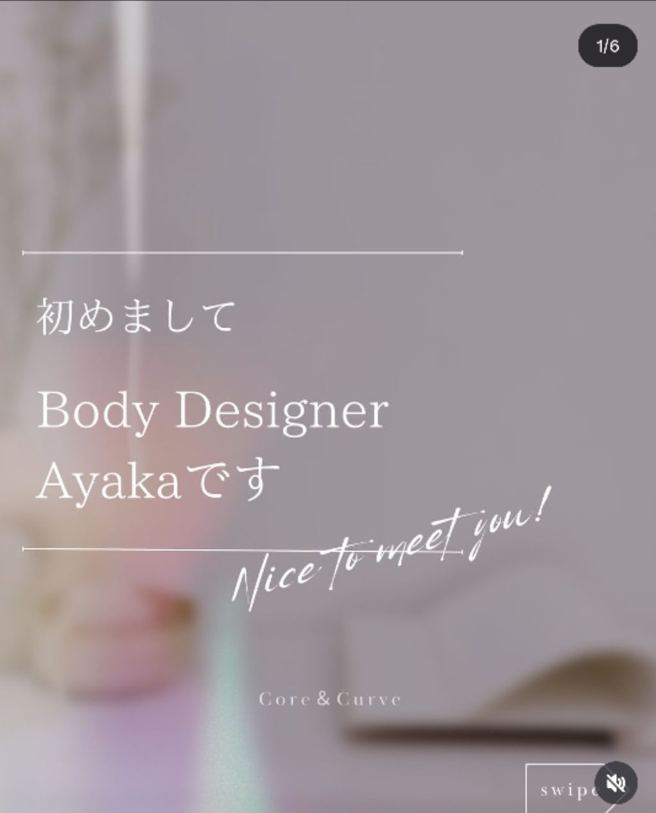
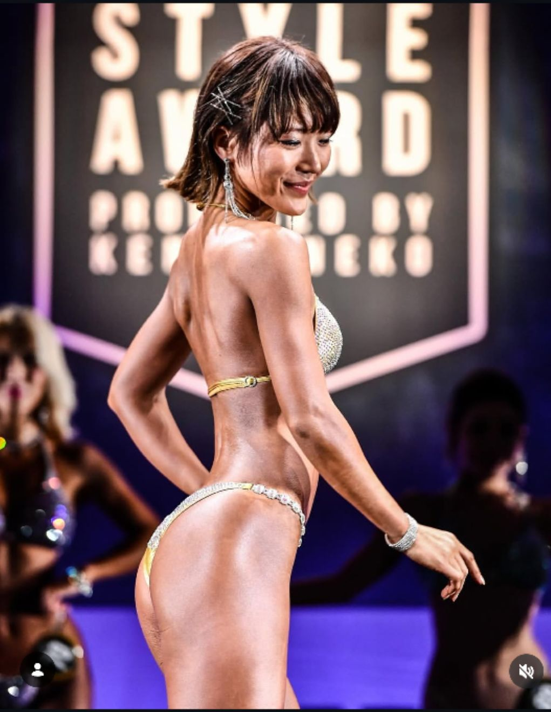
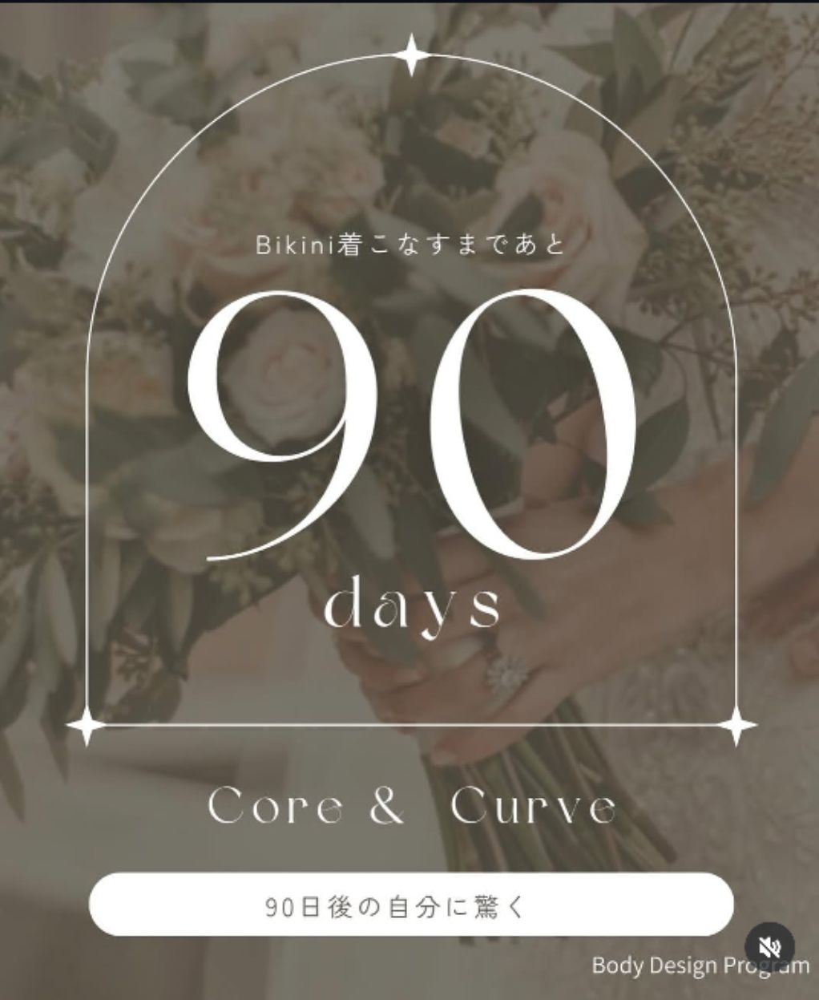
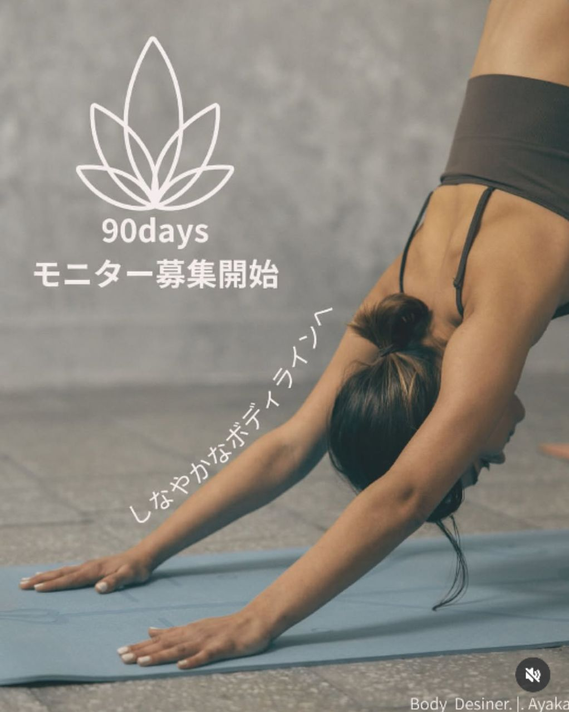

頑張る腹筋はもうやめる
整えるだけで
女性の身体は変わる
忙しくても、
私史上最高の身体へ。

はじめまして。
このページに来てくださって、
ありがとうございます。
いきなりですが、
「ちゃんとやっているのに、変わらない」
そんなふうに感じたことはありませんか？
私自身、活動する中で、
「正しいはずの方法」を続けても
身体がどんどん苦しくなっていく時期がありました。
頑張れば頑張るほど、
お腹が固くなっていく感覚。
「これ以上、何を足せばいいんだろう」
そう思って立ち止まりました。
そこで気づいたのが、
身体は“足す”よりも
“戻す”ことで変わるということ。
呼吸、力の抜き方、日常の姿勢。
静かに整えることで、
女性の身体は自然と変わり、
本来の美しいラインを取り戻します。
「追い込まない」「我慢しない」
それでも、ちゃんと変わる。
そんな方法をお伝えしています。
Origin絶望から、整えるメソッドへ

三兄弟出産後、
私の体は別人のように変わりました。
首、肩、腰、すべてが痛い。
運動してきたはずなのに、
体は思うように動かない。
「どうして私の体は壊れていくの？」
そこから私は産前産後の体を学び直し、
“整える” という考え方に出会いました。
きついトレーニングではなく、
整えることで、
お腹のラインも、自信も、
すべて取り戻すことができます。
DiagnosisBikini Body診断（無料）
まずは、今の身体の状態を
チェックしてください。
- 下腹だけがぽっこりしている
- ヒップが四角い、または垂れている
- ウエストのくびれが出にくい
- 背中や二の腕がたるみやすい
- 姿勢が悪い（反り腰・猫背など）
- 体重は落ちたのに体型が変わらない
- お腹に力が入らない感覚がある
- 脚が太く見える（前・外もも張り）
- 写真を撮ると体型を隠したくなる
- 水着売り場を見ると「まだ早い」と思う
The Truthなぜ体型が変わらないのか？
多くの女性は「運動・食事管理・ストレッチ」を、正しくやっているつもりです。
それでも変わらない理由は、
身体の設計図が違うから。
- 腹筋しても下腹が出る
→ 腹圧が使えていない - スクワットしてもヒップが上がらない
→ 神経入力のズレ - 食事制限しても体型が変わらない
→ 筋肉配置が変わっていない
つまり「設計図」が先。
ProjectBikini Body Project 2026

ただ痩せるプログラムではありません。
“身体を理由に人生を我慢しない女性”を増やすプロジェクトです。
写真に写る自分が好きになる。
堂々と夏を楽しめる。
「若いね」「かっこいい」と
言われる自分へ。
90日間プログラム内容
- 食事指導（個別カロリー・生活に合わせた現実的プラン）
- トレーニング設計（自宅＆ジム・動画・フォームチェック）
- 姿勢・お腹改善（反り腰改善・腹圧再教育）
- メンタルコーチング（停滞期対策・ホルモン対策）
Plans3つのコース
- LINEフルサポート
- 個別食事表＆トレ設計
- 月3回Zoomセッション
- 対面セッション（月4回）
- オンラインサポート
- フォーム動画添削
- 大会同行サポート
- マッスルコントロール・ポージング
- 完全個別メンタルサポート
FAQよくある質問

今年の夏、ビキニを着るのは
“特別な人”じゃありません。
設計図を知った人だけです。
第1期生限定モニター募集
▶ 4月スタート予定（先着5名限定）
▶ 開発協力モニターにあたり30％OFF
※満席になり次第、次回募集は値上げ予定
「BBP」と送る
※相談だけでも大歓迎です。
無理な勧誘はいたしません。